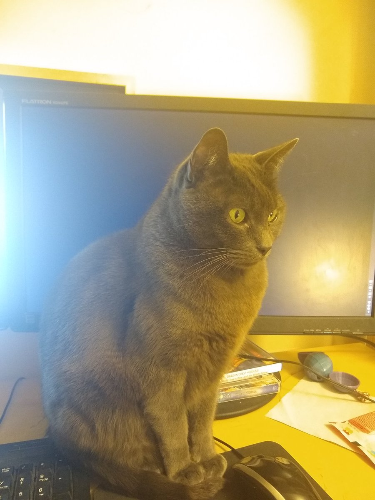
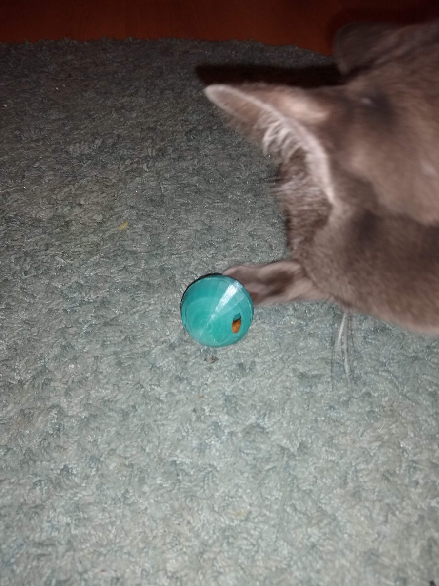
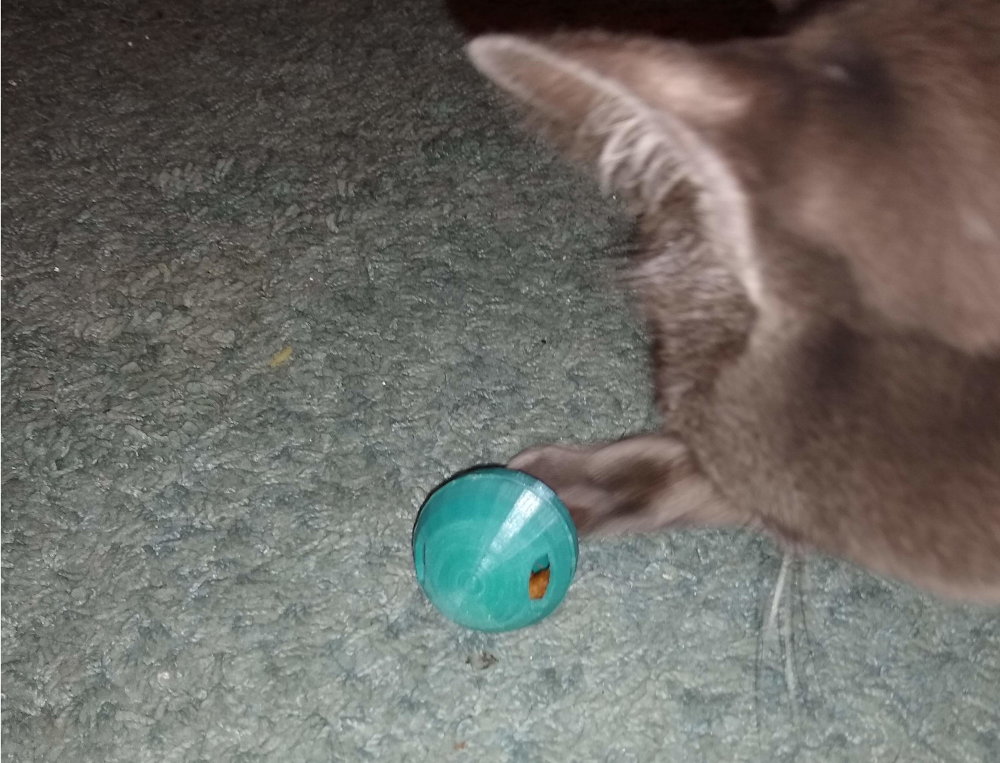
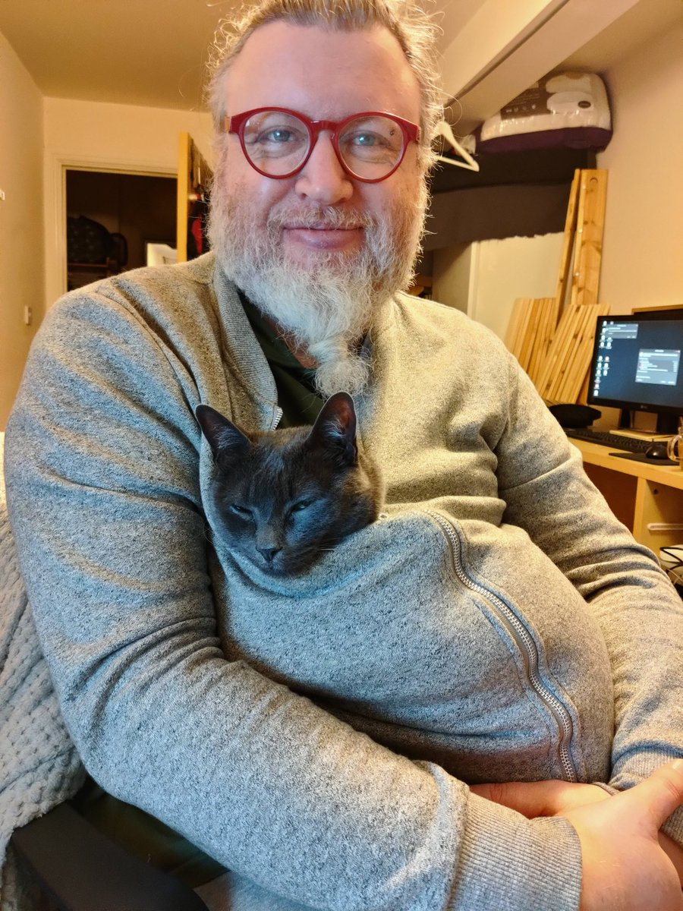

It is snowing outside.
Shiren yesterday, Creeper today, what's next? Cyberpunk? https://twitter.com/WhatsOnSteam/status/1334560312675196933
One of the main advantages of multiple monitors is that when the cat decides to stand in front of one of them you can just drag your windows to the other one.

I make 3d printed thing to feed cat treats with.
http://xixs.com/blog/2020-11-22-3dprint-cat-ball-feeder
It works, cat is now experiencing treats and exercise.

3DPrint Catball feeder

I have been using a device like this for a few years now, it reduces the ability of the cat to inhale treats. Sure it sounds a bit like the ghost of Christmas past rattling chains and dragging weights across the hard floor but it is still better than the cat screaming at you for more treats five seconds after you just gave them some.
So this is a 3dprinter recreation of the same sort of device, we have a ball cavity to fill with treats and a couple of holes to let them out slowly with enough vigorous rolling. The simple large screw thread lets you open and lock the ball and works quite well, it has survived cat and foot abuse without separating. So you simply open ( using the holes as a grip point ) scoop some treats into the half with no holes and then screw it closed again.
Ideally you want a treat similar in size and shape to a "Dreamies" cat treat, the hole is scientifically designed and tested so that such a shaped treat can only fall out when the correct orientation is achieved though aggressive perturbation of the device providing optimal cat exercise.

It should print OK without any supports but the roof of each dome will probably fall slightly and need a bit of clean up. However as this is just on the inside it is an acceptable print flaw. I'd recommend 100% infill so it is less likely to be crushed when you inevitably step on it.
PLA filament is reasonably food safe and my cat keeps trying to chew the prints and any discarded stringing filament anyway. Still it is up to you what you print it with and you can get safer filament and print heads if you want. Mostly you are going to get cat treat dust build up inside which happens with the store bought ones anyway and requires the occasional clean. This is a dispenser rather than a food bowl that your cat will be licking, so I don't think it is that big of a risk.
https://twitter.com/StephenTetley/status/1329509500089413638 @StephenTetley That is indeed, Yog-Sothoth, AKA The Lurker at the threshold, AKA Yogurt.
https://twitter.com/KenMcFarlane/status/1329513033765441541 @KenMcFarlane It's not just a look, it is a smug little bugger.
Cold kitty solutions.

Actually I think you will find this is starting a PHP website vs maintaining a PHP website* 15 years later.
*may contain nazis https://twitter.com/Andr6wMale/status/1328453262308216832
Avatard editor test build http://xixs.com/test/avatard/ works best in the chrome because wasm and you want to hit the random button at the top of the screen. :)
https://twitter.com/evilpaul_atebit/status/1326814375391490048 @evilpaul_atebit I was playing the music tape, but, I'd also managed to accidentally switch my dads HIFI to the radio...
I must say that I am really looking forward to Total Landscaping replacing Gate as Americas goto political suffix.
A reminder that FBX is less of a file format and more of a stone turd abomination. https://twitter.com/NodrogMrDev/status/1324342935119343619
https://twitter.com/spleenal/status/1324389384989364224 @spleenal maybe overkill or not usable for you but you could do it easily with some shadertoy code? eg https://www.shadertoy.com/view/3d3Bz7 takes a video feed and quads it and is easily to tweak to 3x3 or whatevers. ( the *2.0 on line 7 )
Might even run on your phone :)
...
https://twitter.com/crowbarska/status/1323365215195594752 @crowbarska yup, one of the NPCs in town sets them, so it is "part of the game". The puzzles show some of the more esoteric rules and possibilities that you might miss without a bit of prompting. Even handing out a reward so it is worth completing them even if you know what you are doing.